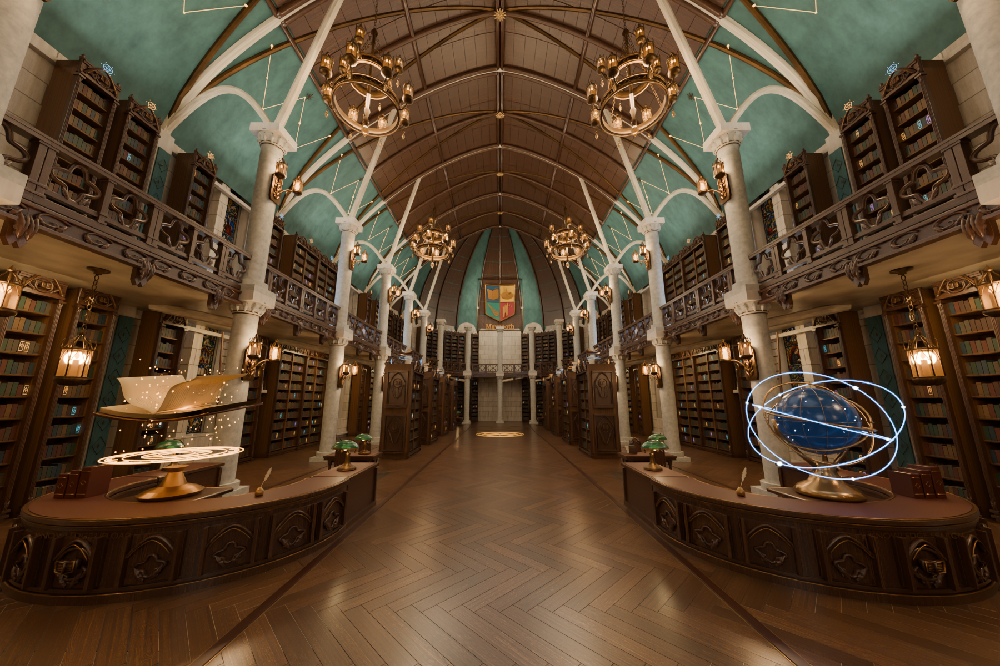
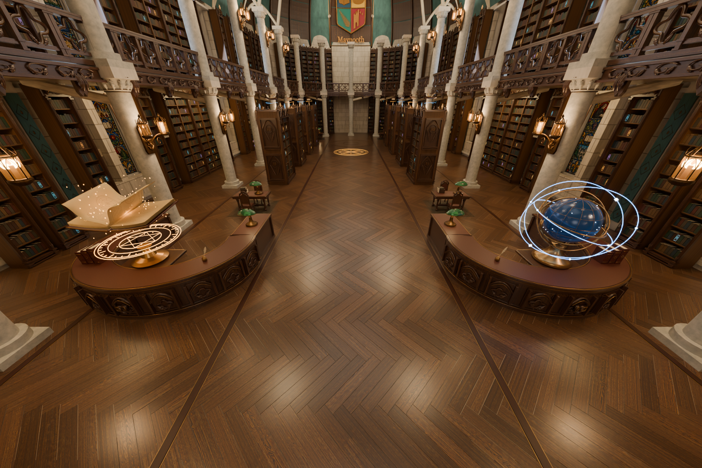
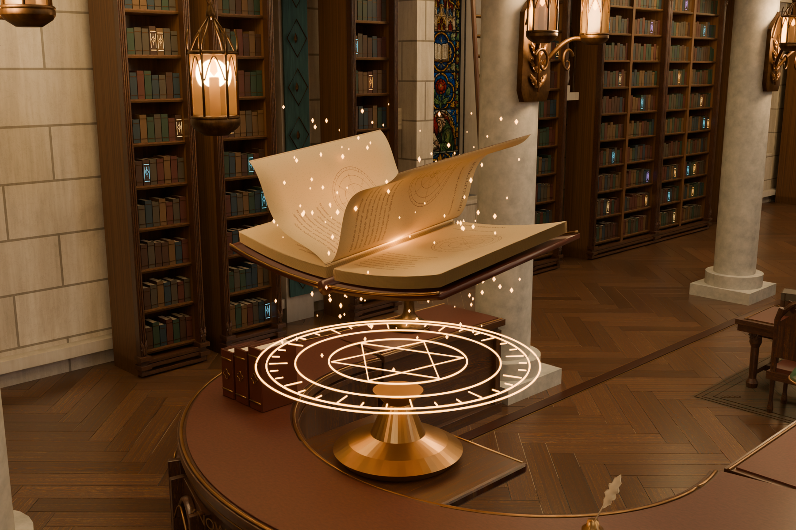
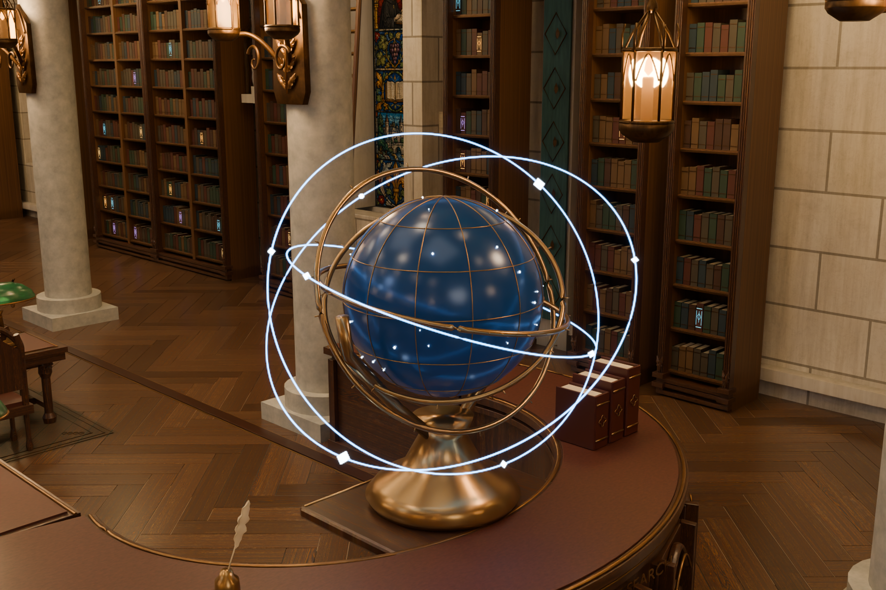
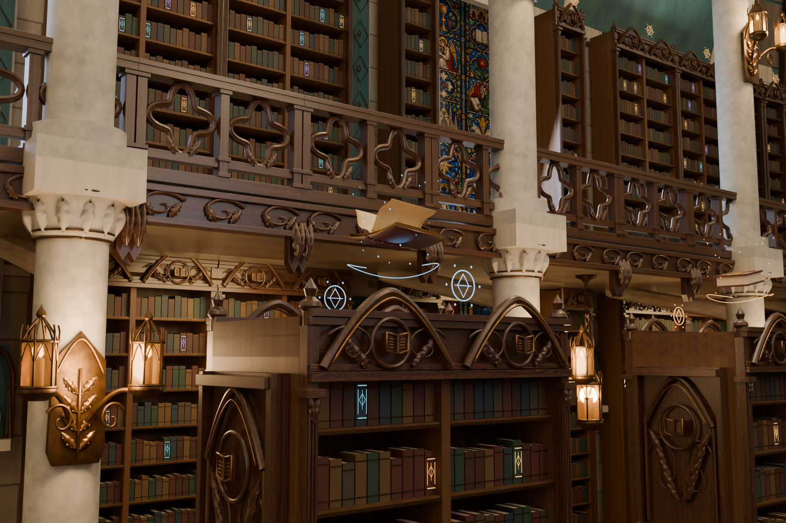
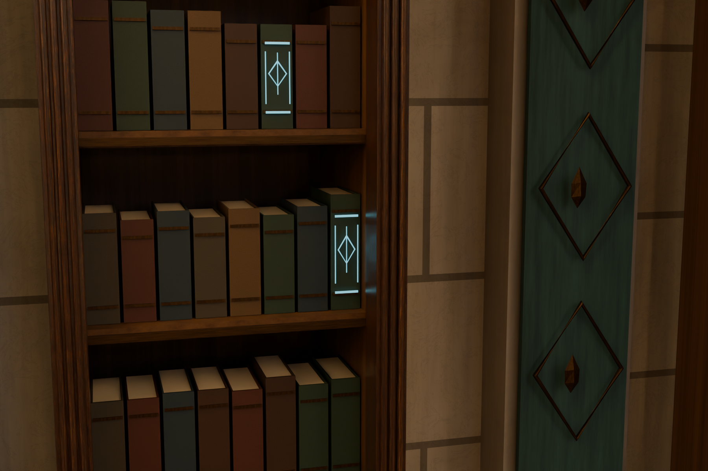
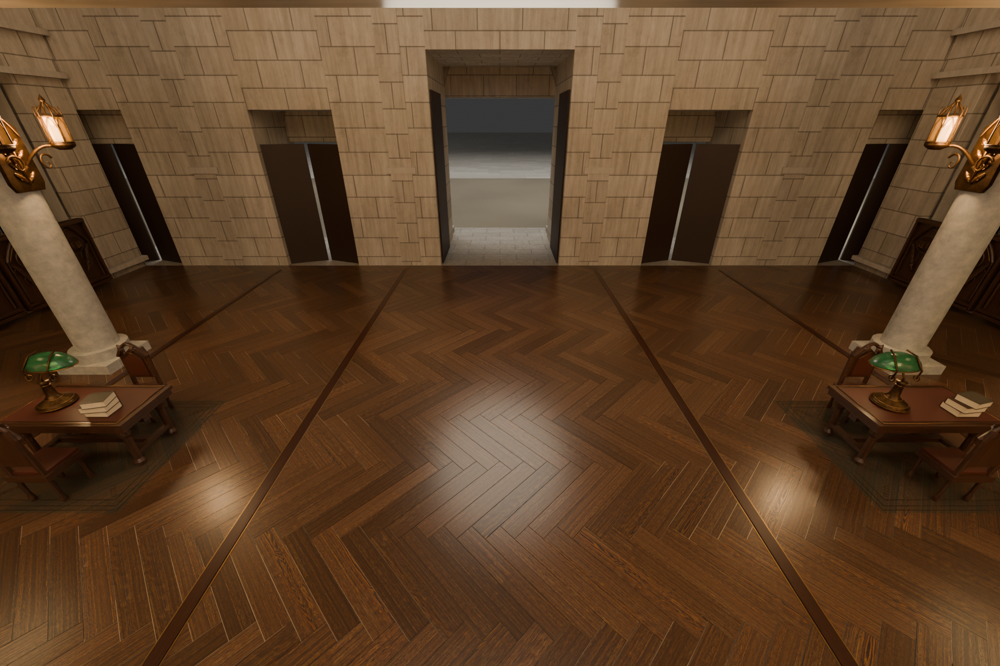
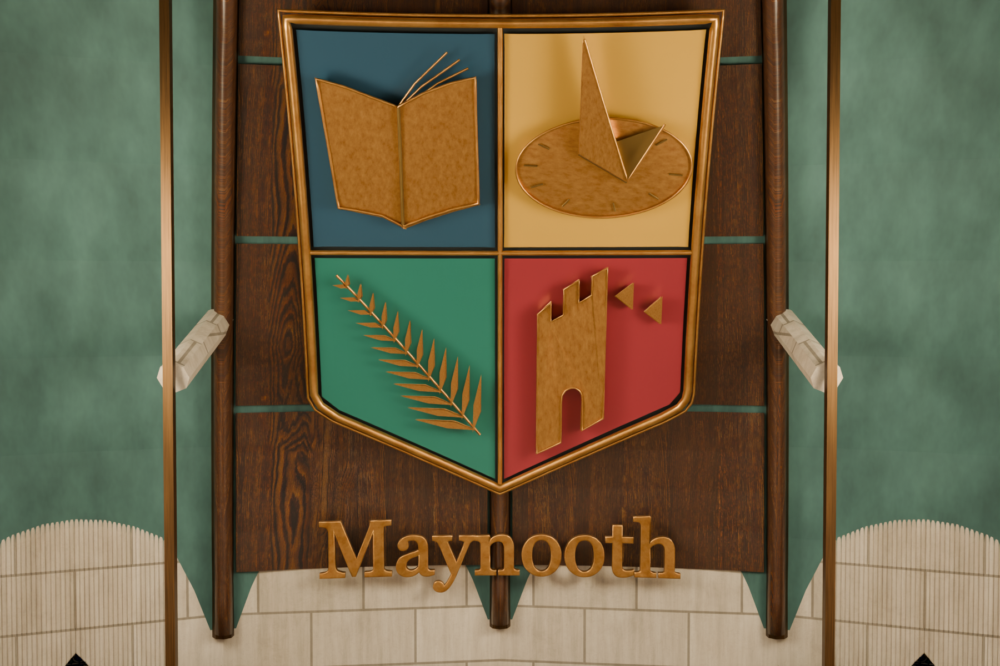

本页全部图像均由交付的 Blender 场景直接渲染。1800 × 1200，Cycles，64 采样，帧 35。

入口中轴视角。柜台宽度增加 22%、深度增加 60%，书本、天球及其底座与光环统一放大 1.7 倍。

原木柜体、绿玻璃阅读灯、参考古籍与羽毛笔组成完整工作台。旧柜台与旧装置已实际删除。

放大的翻页书、金色符印与细碎星尘。保留做旧木作和黄铜层次。

完整装置等比例放大，实体黄铜环与蓝色星轨共同旋转。

8 本展示藏书分布于双面架上方，带轻微起伏、旋转、光弧与星尘。

752 本原有藏书增加细小符文与呼吸微光，原有书本定位保持不变。

原有桌椅、绿玻璃灯与书堆重新布置在入口两侧，补充旧装置移除后的空间。

矩形白底已移除。原校标与 Maynooth 字样顺着后殿弧面安装，保留四色纹章，使用双层金色盾形镶边和薄浮雕金字。
验证范围：静态几何包围盒检查、合并符文实际顶点检查、变换签名与动画采样。未进行 Unity 导入、导航烘焙、物理仿真或目标设备性能测试。材质、灯光及辉光以本页 Cycles 实景为准，实体/材质预览模式显示会有差别。
模块保留整馆世界坐标；完整模型已经包含这些模块。书架魔法包为叠加构件，基础书架在完整场景内。